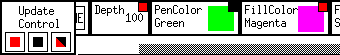
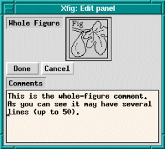
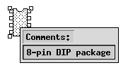

The editing Mode Panel is used to perform edit operations
on existing objects,
See also
.
-
(GLUE COMPOUND)
- Glue selected objects and make them a COMPOUND object.
This is useful to move
or copy some objects together at the same time.
It is also possible to scale part of a figure
by scaling a COMPOUND object
after making part of the figure COMPOUND.
Clicking on an object with mouse button 1 (`tag object')
will tag the object.
Clicking one corner of a rectangular region
with mouse button 2 (`tag region')
and then clicking mouse button 2 (`final corner') again
at the opposite corner of the rectangular region
will tag all objects inside the region.
After tagging all objects to be glued into a COMPOUND object,
clicking mouse button 3 (`compound tagged') will
glue those objects and make them a COMPOUND object.
If an already tagged object is selected by mouse button 1
or mouse button 2, that object will be untagged.
If you want to remove all tags,
change the mode temporarily to any other mode (e.g. "move object") except BREAK COMPOUND.
The COMPOUND object may be separated into component objects by
BREAK COMPOUND.
-
(BREAK COMPOUND)
- Break a COMPOUND object into separate component objects.
Clicking a COMPOUND object with mouse button 1 (`break compound')
will break the COMPOUND into separate component objects.
Clicking with mouse button 2 (`break and tag')
will also achieve the same effect,
but it will tag those component objects for re-gluing with
GLUE COMPOUND again.
If you want to edit component objects without breaking the COMPOUND object,
you may open the COMPOUND object temporarily
using OPEN COMPOUND.
-
(OPEN COMPOUND)
- Open a compound object temporarily for editing the component objects.
Clicking a COMPOUND object with mouse button 1 (`open compound')
will open the COMPOUND object,
and then the component objects may be edited.
All other objects which were not in the COMPOUND object
will become invisible temporarily,
but they will reappear after all COMPOUND objects are closed.
A popup panel with two buttons to close the COMPOUND objects
(Close This Compound and Close All Compounds)
will appear when a COMPOUND object is opened,
and the open COMPOUND may be closed again using those buttons.
Clicking Close This Compound will close the COMPOUND object last opened,
and clicking Close All Compounds will close all nested, opened COMPOUND objects.
If you want to break a COMPOUND object into component objects,
use BREAK COMPOUND.
If the File/Save is attempted while a compound is open, xfig
will ask if you want to save only the open COMPOUND object (Save Part)
or the whole figure (Save All).
 Note:
If you open a COMPOUND object,
delete an object in that COMPOUND object,
close the COMPOUND object and
Undo the delete operation,
the object you deleted will reappear but it will outside of the COMPOUND object.
Conversely, if you delete an object from the canvas,
open a compound then undo the delete of the original object,
it will now be part of the open compound.
In this way you may add or remove selected objects from a COMPOUND.
Note:
If you open a COMPOUND object,
delete an object in that COMPOUND object,
close the COMPOUND object and
Undo the delete operation,
the object you deleted will reappear but it will outside of the COMPOUND object.
Conversely, if you delete an object from the canvas,
open a compound then undo the delete of the original object,
it will now be part of the open compound.
In this way you may add or remove selected objects from a COMPOUND.
-
(JOIN/SPLIT LINES/ETC)
-
With this feature you may join lines or splines together or split
a line or spline into two objects. Also, you may close an open line
(make it a polygon) or spline (closed spline) or open a box, polygon
or closed spline.
To join two lines or two splines together
click mouse button 1 (`Join lines/splines') to select the first endpoint
and again (`Choose next point') to select the second endpoint to be joined.
If the endpoints are on the same line or spline, it will make a closed object.
To split a line or spline into two separate objects or to convert a box
or polygon to a line, or to open a closed spline,
click mouse button 2 (`Spline line/spline')
between two the points on the line/spline etc.
-
(SCALE OBJECT)
-
Clicking any corner of
BOX,
ARC-BOX,
or COMPOUND object
with mouse button 1 (`scale box') and dragging the mouse will
start scaling the object proportionally to its horizontal/vertical ratio.
Clicking any edge of that object
with mouse button 1 (`scale box') will
start scaling the object only in one dimension (width or height).
The scaling operation is finished
by clicking mouse button 1 (`new position') again.
Clicking on an object with mouse button 2 (`scale about center')
will scale the object proportionally about its center.
The scaling operation is finished
by clicking mouse button 2 (`new position') again.
In any case, The scaling operation may be canceled
by clicking mouse button 3 (`cancel').
It is not possible to scale
TEXT objects
directly with this function.
To scale TEXT objects,
use EDIT OBJECT or UPDATE
and change the size of the text
(see TEXT SIZE).
However, if a COMPOUND
object that includes TEXT objects is scaled,
the TEXT objects will also be scaled
if the Rigid flag
is not set.
You may use also MOVE POINT
if you want to scale an object such as a BOX
without keeping its horizontal/vertical ratio.
-
(ALIGN)
- Align objects.
How objects are aligned is set by
VERTICAL ALIGN
and HORIZONTAL ALIGN.
Clicking on a COMPOUND object
with mouse button 1 (`align compound')
will align objects within in the COMPOUND object.
Clicking mouse button 2 (`align canvas') anywhere on the canvas
will align all objects to the canvas.
-
(MOVE POINT)
- Move a point of an object.
Select the point to be moved
by clicking the point with mouse button 1 (`move point'),
and finish the move by click mouse button 1 (`new position') again
after moving mouse to the new point.
If you want to restrict the move to horizontal or vertical,
use mouse button 2 (`horiz/vert move') instead of mouse button 1.
The operation may be canceled by clicking mouse button 3 (`cancel')
in either case.
This may not be used for TEXT objects.
For BOX,
ARC-BOX,
and COMPOUND objects,
not only the selected point
but the edges connected to the point will be moved.
The object created by
REGULAR POLYGON
is an ordinary POLYGON object,
and only the selected point will be moved.
Points may also be added
or deleted.
If you want to move entire object, use MOVE instead.
-
(ADD POINTS)
- Add a new point to a
POLYLINE,
POLYGON,
or SPLINE object.
Clicking mouse button 1 (`break/add here') between two points of an object
will add a new point at that location,
and the point will move following mouse cursor.
The operation is finished
by clicking mouse button 1 (`place new point') again.
It is not possible to add a point to
BOX or
ARC-BOX objects.
The object created by
REGULAR POLYGON
is an ordinary POLYGON object,
and it is possible to add new points anywhere in it.
Points may also be moved
or deleted.
-
(DELETE POINTS)
- Delete point from
POLYLINE,
POLYGON,
or SPLINE object.
Clicking a point to be deleted with mouse button 1 (`delete point')
will delete the point,
and the points on either side of the point will connected directly.
It is not possible to delete points from a
BOX
or ARC-BOX object.
The object created by
REGULAR POLYGON
is ordinary POLYGON object,
and it is possible to delete points from it.
Points may also be moved
or added.
-
(MOVE)
- Move object.
Select the object to be moved by clicking the object
with mouse button 1 (`move object'),
and finish the move operation by
clicking mouse button 1 (`place object') again at the new position.
If you want to restrict the movement to horizontal or vertical,
use mouse button 2 (`horiz/vert move') instead of mouse button 1.
The operation may be canceled by clicking mouse button 3 (`cancel') in
either case.
If you want to move several objects at one time,
you may put them into a COMPOUND object
using GLUE COMPOUND.
By setting SMART-LINKS MODE,
it is possible to move the endpoints of lines which touch the object
as you move the object itself. Additionally, endpoints of lines which
fall inside a COMPOUND object will also be moved.
The SMART-LINKS feature
only works with POLYLINES (not splines) touching a BOX, ARC-BOX, or COMPOUND.
Objects may also be copied
or deleted.
If you want to move a point of the object,
use MOVE POINT instead.
-
(COPY)
- Copy object.
Select the object to be copied by clicking the object
with mouse button 1 (`copy object'),
and finish the copy operation by
clicking mouse button 1 (`place object') again at the position
to place the copy.
If you want to restrict the movement to horizontal or vertical,
use mouse button 2 (`horiz/vert copy') instead of mouse button 1.
The operation may be canceled by clicking mouse button 3 (`cancel')
in either case.
If you want to copy several objects at the same time,
you may put them a COMPOUND object
using GLUE COMPOUND.
By setting SMART-LINKS MODE,
it is possible to copy the lines which touch the object
as you move the object itself.
This only works with POLYLINES (not splines) touching a BOX or ARC-BOX.
It is also possible to make many copies in this mode,
using ARRAY PLACEMENT.
To do this, first set the number of copies to be created
by setting NUMBER OF X COPIES
and NUMBER OF Y COPIES.
Then select the object to be copied by clicking the object
with mouse button 1 (`copy object'),
and specify the direction and distance to place the copies
by clicking mouse button 2 (`array placement') after moving the mouse.
Normally, objects will be placed on the array of
NUMBER OF X COPIES and NUMBER OF Y COPIES,
but when either of them is set 0,
copies of specified number will be generated
and they can be placed obliquely.
Clicking an object with mouse button 3 (`copy to cut buf')
will copy the object to the xfig cut buffer.
The object copied into the xfig cut buffer may be inserted
into the figure on the canvas
using PASTE.
This allows you to copy part of a figure to another figure.
Any object in the xfig cut buffer will be overwritten
when the new object is copied into the xfig cut buffer.
To copy multiple objects into the xfig cut buffer,
you must first put them into a COMPOUND object
using GLUE COMPOUND.
Objects may also be moved
or deleted.
-
(DELETE)
- Delete object.
Clicking an object with mouse button 1 (`delete object')
will remove the object.
It is also possible to remove objects in a rectangular region
by clicking mouse button 2 (`delete region') at one corner of the region
and then again (`final corner') again at the opposite corner.
Clicking an object with mouse button 3 (`del to cut buf')
will remove the object from the canvas and move it to the xfig cut buffer.
The object moved into the xfig cut buffer may be inserted
into the figure on the canvas
using PASTE later.
See also COPY.
If you want to delete all objects from the canvas to make a new figure,
you may use New.
-
(UPDATE)
- Update the attributes (such as line width or colors) of object
with the current settings in the
Attribute Panel.
Conversely, it is also possible to copy the attributes of an object
to the attribute panel.
Clicking an object with mouse button 1 (`update object')
will apply the current settings of the attribute buttons selected for UPDATE
to the object.
If a COMPOUND object
is clicked with mouse button 1 (`update object'),
the attributes of all the objects in the COMPOUND object will be updated.
Clicking an object (except a COMPOUND object)
with mouse button 2 (`update settings')
will copy the attributes of the object to the attribute buttons
which are selected for UPDATE.
This allows you to copy attributes from one object to another object.
In UPDATE mode,
a small toggle button appears in the upper-right corner
of each attribute button,
and only the attribute buttons whose toggle button is set ON
will be used for update.
Clicking the toggle button at the upper-right corner of an attribute button
will toggle the button ON/OFF.
It is also possible to select, unselect, or toggle all attribute buttons,
using Update Control buttons at the left side of the attribute panel.

The attributes of objects may also be modified
using EDIT OBJECT.
Some attributes can't be modified by UPDATE but may be modified by EDIT OBJECT.
-
(EDIT OBJECT)
- Edit various attributes (such as line width or colors) of object.
Clicking an object with mouse button 1 (`edit object')
will popup the Edit Panel to edit the attributes.
The items in the panel depend on the object being edited.
See Edit Panel for more information.
Clicking a control point of a
SPLINE object
with mouse button 3 (`edit point') will popup
EDIT POINT panel to
modify the shape factor of the spline curve.
The attributes of objects may also be modified using UPDATE,
but some attributes can't be modified with UPDATE.
If mouse button 2 (`edit Fig comments') is clicked on the canvas,
the edit panel will popup to allow the user to change the comments
associated with the whole figure:

If the Shift key is held down while mouse button 2 (`show comments')
is clicked on an object, any comments in the object are displayed
in a popup until the mouse button is released:

-
(FLIP VERTICALLY/HORIZONTALLY)
- Flip object vertically or horizontally.
It is also possible to make a copy of the object
flipped vertically or horizontally.
Clicking the object with mouse button 1 (`flip')
will flip the object vertically/horizontally about that point.
Clicking the object with mouse button 2 (`copy & flip')
will make copy of the object flipped vertically/horizontally about that point,
leaving original object as it was.
It is also possible to set the anchor point
about which the object will be flipped,
by clicking mouse button 3 (`set anchor') at the point.
A crosshair (+) indicates the anchor point on the canvas.
The anchor point may be removed by
clicking mouse button 3 (`set anchor') again.
To rotate an object, use ROTATE.
-
(ROTATE)
- Rotate object by specified angle.
Clicking an object with mouse button 1 (`rotate object')
will rotate the object to clockwise or counter-clockwise
by the angle specified by
ROTATION ANGLE
about the point that is clicked.
It is also possible to make many copies in this mode,
using COPY & ROTATE.
Clicking object with mouse button 2 (`copy & rotate')
may make many copies rotated by the angle specified by the
ROTATION ANGLE.
The number of copies to be created may be set by
NUMBER OF COPIES.
As in FLIP VERTICALLY/HORIZONTALLY,
it is possible to set the anchor point
about which the object will be rotated,
by clicking mouse button 3 (`set anchor').
BOX,
ARC-BOX
and PICTURE objects,
and COMPOUND
objects containing any of those objects may only be rotated
by multiples of 90 degrees.
To flip object vertically or horizontally,
use FLIP VERTICALLY/HORIZONTALLY.
-
(SPLINE <-> LINE / BOX <-> ARC-BOX)
- Convert object type.
Clicking an object with mouse button 1 (`spline <-> line')
will perform a conversion thus:
 polyline --> open approximated spline -->
open interpolated spline --> polyline
polyline --> open approximated spline -->
open interpolated spline --> polyline
-
polygon --> closed approximated spline -->
closed interpolated spline --> polygon
-
box --> arc-box --> box
Clicking an object with mouse button 3 (`open <-> close')
will perform a conversion thus:
-
polyline <-> polygon
-
open approximated spline <-> closed approximated spline
-
open interpolated spline <-> closed interpolated spline
Finer control is possible for spline curves.
See EDIT POINT
and About Spline Curves
for more information.
-
(ADD/DELETE ARROWS)
- Add/delete arrow head to/from
POLYLINE,
OPEN SPLINE,
or OPEN ARC.
Clicking the end point of object with mouse button 1 (`add arrow')
will add an arrow head to that end.
Clicking an arrow head with mouse button 2 (`delete arrow')
will remove the arrow head.
The shape of the arrow head may be set by
ARROW TYPE.
The size of arrow head may be set by
ARROW SIZE.
It is also possible to automatically create arrow heads when
creating new objects
by setting ARROW MODE.
) of the object.
The corner markers are small square marks
which are displayed at the corner point of objects
which may be selected for any particular mode.
Most objects may also be selected by clicking on the line
connecting corner markers,
but it may have a different meaning in some editing modes.
For example in the SCALE OBJECT mode,
clicking on a corner marker will scale the object proportionally
to its horizontal/vertical ratio,
but clicking on a line connecting corner markers (edge of the rectangle)
will scale the object only in that direction (i.e. horizontally or vertically).
When object corners or edges are coincident, clicking on the object
may not select the desired object but the other object instead.
In this case, the desired object may be selected with following operations:
mode,
and it shows all of the attributes of the object.
The Contents of the Edit Panel varies depending one the type of object.
This shows a few of those Edit Panels.
,
and it will popup by clicking on a control point of spline curve
with mouse button 3 (`edit point') in
will control the shape of the curve.
The shape factor of a control point may also be modified
without popping up the Edit Point panel
by clicking the control point while pressing both of SHIFT key and CONTROL key.
Clicking a control point with mouse button 1 (`More approx')
will decrease the shape factor,
and clicking a control point with mouse button 3 (`More interp')
will increase the shape factor.
Clicking a control point with mouse button 2 (`Cycle shape')
will cycle through three preset values:
Approximated, Angular, and Interpolated.

 Comments
Comments
![[Spline - Shape Factor]](images/spline-sf-example.gif)